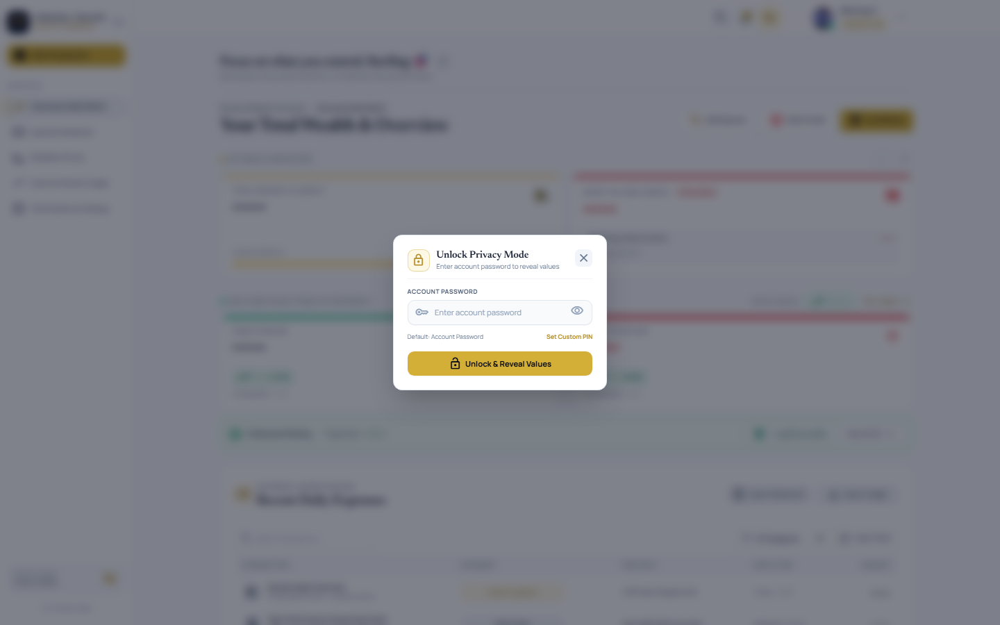
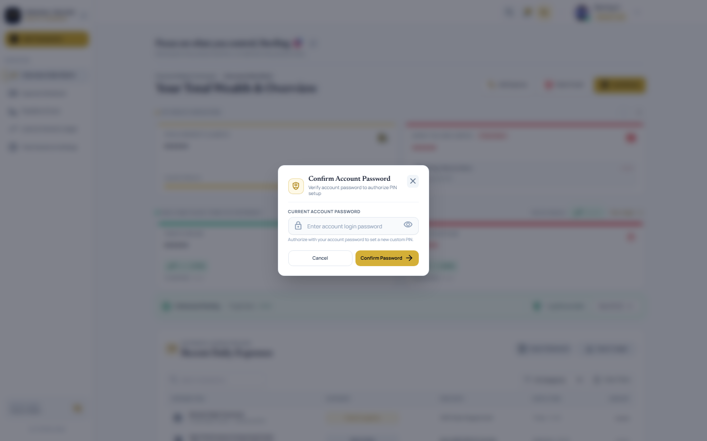
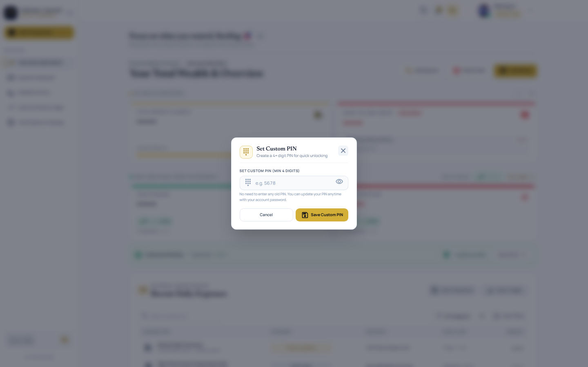
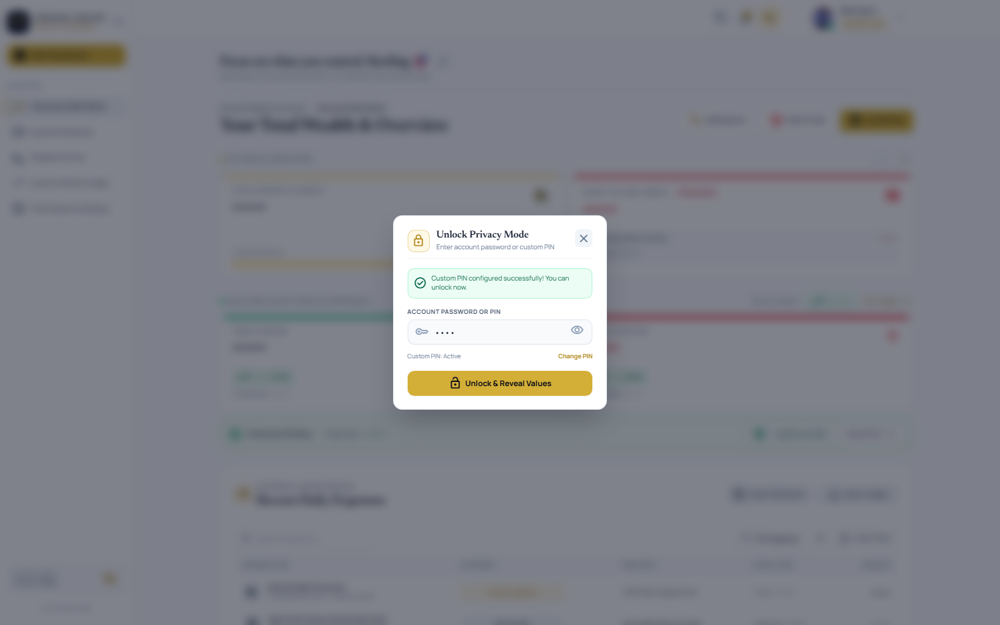
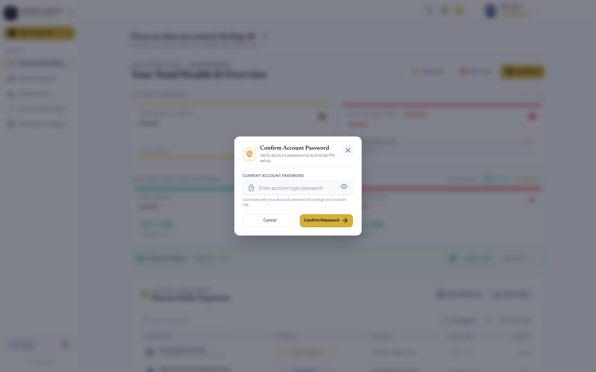

Privacy Modal Key Spacing, Account Password PIN Authorization & Dynamic Wording
Delivered all 3 user-requested improvements to the Privacy Mode Unlock & PIN management system: generous cursor spacing away from key icon, mandatory account password authorization for PIN creation/updates, and dynamic state-aware button labeling with direct re-authentication.
Key Icon Cursor Spacing
Increased input padding to pl-12 (48px) with icon anchored at left-3.5. The text cursor has 16px+ clear breathing room from the key icon.
Account Password Authorization
Users must verify their primary Default Account Password via verifyAccountPassword() before they are allowed to set or change a custom PIN.
Dynamic Wording & Direct Change
Link updates reactively: Set Custom PIN when empty, Change PIN once active. Next time, users update directly using account password—no old PIN needed.
1. Rationale & Technical Necessity
1. Visual Ergonomics: In the Privacy Unlock Modal, the input's key icon collided with the text insertion caret, making input feel cramped. Increasing the left padding to pl-12 gives a polished, luxury feel.
2. Security Integrity: Allowing anyone with brief device access to set a custom PIN without verifying the account password would compromise the ledger's privacy. Requiring account password authentication ensures only the genuine account holder can configure or reset the PIN.
3. Frictionless Maintenance: If a user forgets their quick PIN, they should not be locked out of updating it. By allowing the account password to authorize PIN changes, the user can reset or update their PIN anytime without recalling their old PIN.
2. Visual Verification Across All Privacy Steps




